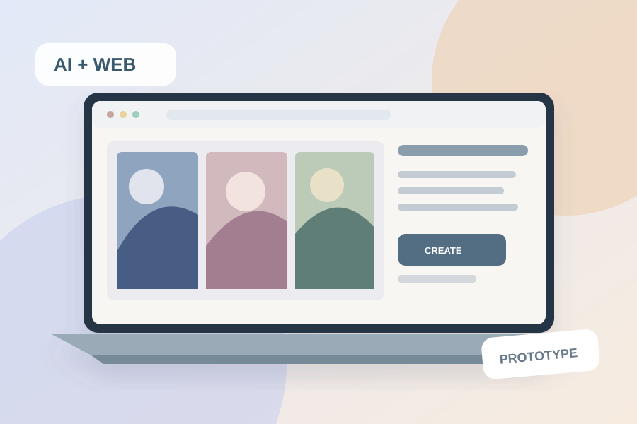

نماذج من العمل الفعلي
صناعة محتوى متجر بكم
نموذجان من أعمالي الإعلانية بأسلوب قصصي، ضمن خبرتي في إعداد الفكرة والسكريبت والتصوير والمونتاج.
النتيجة: إنتاج أكثر من 500 فيديو، وأعلى محتوى تجاوز 1.8 مليون مشاهدة عضوية.
معرض الأعمال / أعمال مختارة
أنا عبدالله أحمد، أعمل في صناعة المحتوى والسوشال ميديا والتجارة الإلكترونية، وأستكشف تطوير تجارب الويب باستخدام الذكاء الاصطناعي.
01 / المشاريع
نماذج فيديو حقيقية من أعمالي، إلى جانب مشروعين رقميين قيد التطوير.
نموذجان من أعمالي الإعلانية بأسلوب قصصي، ضمن خبرتي في إعداد الفكرة والسكريبت والتصوير والمونتاج.
النتيجة: إنتاج أكثر من 500 فيديو، وأعلى محتوى تجاوز 1.8 مليون مشاهدة عضوية.
تجربة خلط قزاز من حساب يستاهل، مثال فعلي على محتوى التجارب وتصوير الفيديو ومونتاجه.
النتيجة: على مستوى الحساب، تجاوز أحد المقاطع 1.1 مليون مشاهدة عضوية وفق السيرة الذاتية.

تصميم توضيحياستخدام Claude Code لتطوير نموذجين أوليين: أداة لصناعة القصص وأخرى لتوليد القصص المصورة.
النتيجة: نموذجان أوليان قيد التطوير، وليسا منتجين منشورين بعد.
02 / أسلوب العمل
تحديد الفكرة، كتابة السكربت، وتجهيز أسلوب العرض.
التصوير، توجيه التنفيذ، المونتاج وتجهيز النشر.
متابعة الأداء والاستفادة من النتائج لتطوير المحتوى اللاحق.
03 / التواصل
للتواصل بخصوص صناعة المحتوى أو المشاريع الإبداعية.